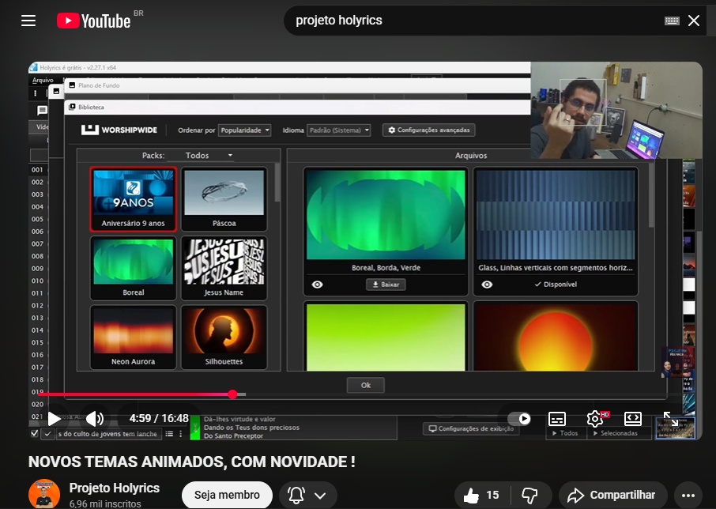
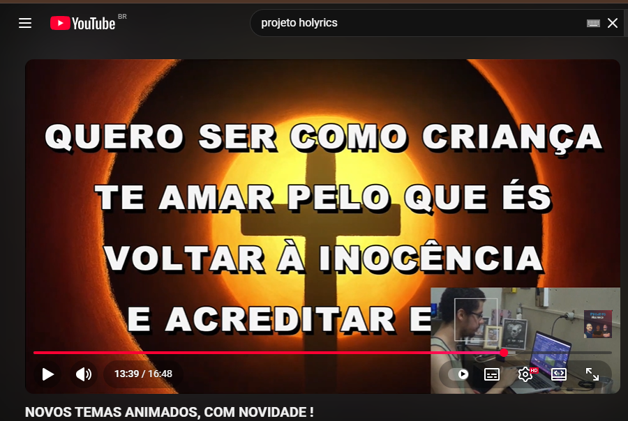

O Projeto Holyrics está trazendo mais uma atualização especial para equipes de mídia e projeção: novos temas animados criados para elevar a qualidade visual de cultos, ministrações, conferências e eventos cristãos. No vídeo mais recente do nosso canal, você confere diversas animações modernas, leves e totalmente compatíveis com o Holyrics.
Esses temas foram desenvolvidos com foco em suavidade, beleza e reverência, trazendo um ambiente visual mais agradável durante momentos de louvor e adoração.
✨ O que há de novo nos temas?
- Animações suaves e fluidas
- Tons modernos em azul, dourado e laranja
- Temas com cruz e elementos cristãos
- Movimentos leves que não distraem o público
- Compatibilidade com Holyrics, OBS, PowerPoint e VLC
🎨 Exemplos de estilos apresentados no vídeo


📥 Como usar esses temas no Holyrics?
Basta baixar os vídeos dos temas em formato MP4 e adicioná-los como background dentro do Holyrics. Você também pode usar no OBS, ProPresenter e players de vídeo.
Os temas funcionam perfeitamente como:
- Fundos para letras de músicas
- Projeção de versículos
- Slide de mensagens
- Ambientes de oração
- Introdução de culto
🎬 Assista ao vídeo completo
No vídeo, mostramos todos os temas disponíveis e como utilizá-los na prática durante o culto. Vale a pena assistir para conferir todos os detalhes e também os novos temas que os desenvolvedores do Holyrics colocaram para comemorar os 9 anos de criação do programa.
Continue acompanhando o Projeto Holyrics para mais temas, tutoriais e conteúdos especiais para equipes de projeção.